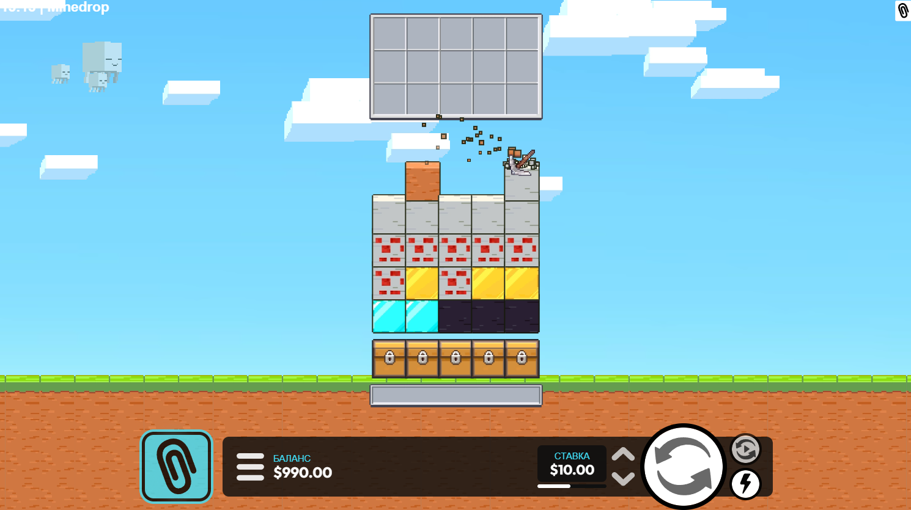

Mine Drop Game: что важно знать перед стартом
Mine drop game — это не просто визуально яркий слот, а формат с более выраженной ритмикой раундов. Игрок отслеживает не только сам результат спина, но и глубину прогресса в игровом поле, поэтому выбор темпа игры становится важнее. По этой причине новички часто начинают с mine drop demo, чтобы понять динамику без финансового давления.

Если смотреть на семантику, запросы mine drop slot, play mine drop и mine drop online пересекаются, но выражают разные ожидания. Один пользователь ищет саму игру, второй — инструкции, третий — площадку с бонусом и быстрым входом. Поэтому в рамках кластера мы разделяем страницу обзора, страницу правил и страницу с казино, чтобы поисковик видел четкую тематическую логику.
Как оценивать сессию в mine drop slot
- задайте бюджет сессии и лимит времени до запуска игры;
- оцените среднюю дисперсию и не завышайте стартовую ставку;
- используйте паузы между сериями, чтобы не уходить в импульсивную игру;
- фиксируйте результат, даже если сессия закончилась в плюс.
Куда перейти дальше
FAQ
Mine drop game и mine drop slot — это одно и то же?Да, чаще всего пользователи имеют в виду одну игру, но с разными формулировками запроса.
С чего начать play mine drop?С демо-режима и краткого гайда по правилам.
Нужна ли стратегия сразу?Базовой дисциплины достаточно, подробную стратегию лучше подключать после тестов.
Есть ли мобильный формат?Да, смотрите страницу mine drop online.